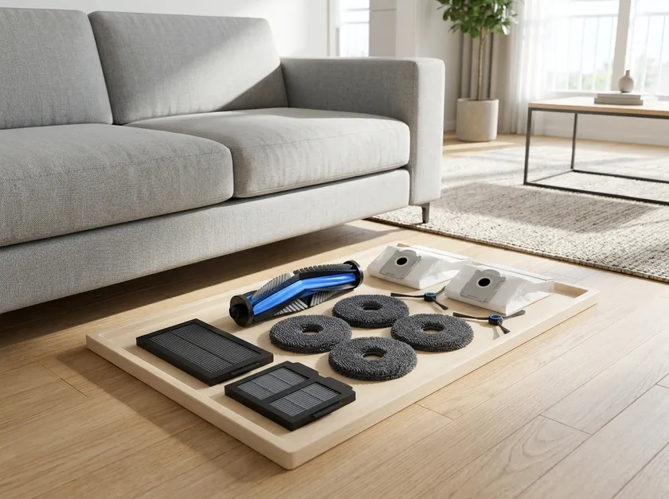

에코백스 (ECOVACS)
에코백스 디봇 스테이션 물걸레 세척 냄새 줄이는 전용 클리너 1L 1병·2병 보충 가이드
글·구성: 제이상점 · 기종별 1:1 호환 실물 점검 · 교체 주기 비교표 · 스마트스토어 패키지 안내

핵심 관리 · 선택 체크포인트
- 에코백스 디봇 올인원 로봇청소기로 거실과 주방 물걸레 청소를 매일 돌리다
- 1L 대용량 블루 캡 용기 정량 보충과 카트리지 입구 정리: 에코백스 디봇 스테이션의 자동 세제 투입구 또는 정수통에 설명서 권장 비율에 맞춰 전용 클리너를 넣어 주면 과도한 거품 없이 산뜻하게 세척됩니다.
- 에코백스 전용 클리너 1L 옵션 및 사용 전 체크표: 물걸레 청소 빈도와 수납 공간에 맞춰 1병 또는 2병 묶음을 선택해 보세요.
- 상세페이지에서 1L-1병 및 1L-2병(복수구매할인) 옵션을 확인하실 수 있습니다.
- 스테이션 옆 코너 비치와 세탁실 하부장 2병 수납: 사용 중인 1병은 스테이션 바로 옆 바닥 매트에 두고, 예비 1병은 세탁실 하부장 선반에 원형 걸레 패드·더스트백과 함께 보관하면 동선이 편리합니다.
실물 부품 디테일 · 관리 구성 이미지




부품 규격 · 점검 기준표
| 확인 항목 | 에코백스 전용 클리너 1L 특징 | 선택 및 관리 포인트 |
|---|---|---|
| 용량 1L-1병 | 에코백스 바닥 로봇청소기용 1L 대용량 1병 | 스테이션 옆 코너에 두고 깔끔하게 정량 리필할 때 |
| 용량 1L-2병(복수구매할인) | 1L 대용량 본품 2병 할인 묶음 | 매일 물걸레 세척을 돌려 다용도실에 예비 병을 구비할 때 |
| DEEBOT 전용 확인 | 바닥 로봇청소기(DEEBOT) 전용 포뮬러 | 창문 로봇청소기(WINBOT) 용액과 구분해 바닥 기종에 사용 |
💡 교체 주기가 겹치는 필터·브러시·물걸레·더스트백은 단품 배송비를 여러 번 내기보다 에코백스 세제 세정제 기간별 세트(3개월·6개월·1년)로 미리 구비해 두면 물세척 후 24시간 교대 건조까지 끊김 없이 관리할 수 있습니다.
자주 묻는 질문 (FAQ)
Q. 에코백스클리너1L의 용량 1L-1병 규격과 관리 기준은 무엇인가요?
A. 에코백스 바닥 로봇청소기용 1L 대용량 1병 규격을 사용하며, 스테이션 옆 코너에 두고 깔끔하게 정량 리필할 때 기준으로 점검·교체하면 청소 효율을 안정적으로 유지할 수 있습니다.
Q. 에코백스클리너1L의 용량 1L-2병(복수구매할인) 규격과 관리 기준은 무엇인가요?
A. 1L 대용량 본품 2병 할인 묶음 규격을 사용하며, 매일 물걸레 세척을 돌려 다용도실에 예비 병을 구비할 때 기준으로 점검·교체하면 청소 효율을 안정적으로 유지할 수 있습니다.
Q. 에코백스클리너1L의 DEEBOT 전용 확인 규격과 관리 기준은 무엇인가요?
A. 바닥 로봇청소기(DEEBOT) 전용 포뮬러 규격을 사용하며, 창문 로봇청소기(WINBOT) 용액과 구분해 바닥 기종에 사용 기준으로 점검·교체하면 청소 효율을 안정적으로 유지할 수 있습니다.
제이상점 1:1 검수 추천 패키지 · 구매 안내
![[호환] 에코백스 T50 프로 옴니 소모품 물걸레 1년 세제 패키지](../../assets/img/ecovacs-t50-pro-omni-product-578af9e1.webp)
함께 많이 찾는 보충 구성
대표 구성 참고가 75,400원대 (옵션·쿠폰별 스마트스토어 결제 화면 기준)
1년 세트6개월 세트3개월 세트
☑️ 주문 전 확인해 두면 좋은 제이상점 안심 포인트
· 기종별 1:1 전용 규격 검수: 모델명·연식에 맞는 호환·정품 구성을 검수해 오주문 불안을 줄였습니다.
· 해외직배송 미리 주문 팁: 중국 구매대행·해외직배송 상품이므로 마지막 여분 1개를 꺼내 쓰는 시점에 개인통관고유부호와 함께 여유 있게 주문해 두시면 훨씬 경제적인 비용으로 끊김 없이 교체하실 수 있습니다.
· 기종별 1:1 전용 규격 검수: 모델명·연식에 맞는 호환·정품 구성을 검수해 오주문 불안을 줄였습니다.
· 해외직배송 미리 주문 팁: 중국 구매대행·해외직배송 상품이므로 마지막 여분 1개를 꺼내 쓰는 시점에 개인통관고유부호와 함께 여유 있게 주문해 두시면 훨씬 경제적인 비용으로 끊김 없이 교체하실 수 있습니다.
📖 더 많은 가정 내 사용 스토리와 상세 후기가 궁금하시다면
📱 네이버 블로그 모바일 원문 보기 ↗